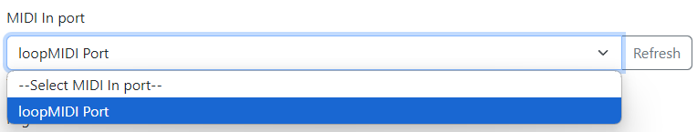
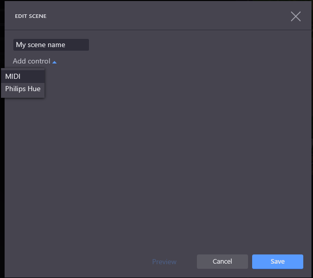
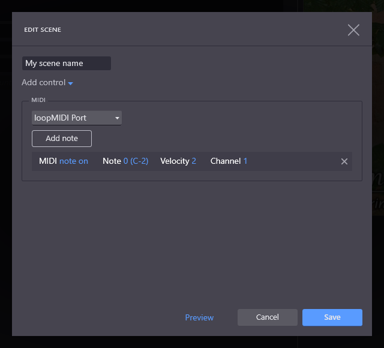

Companion Midi Button Presser

This program provides a straightforward, easy-to-set-up way to press buttons in BitFocus Companion by listening to MIDI note-on messages.
This is useful to users of software such as Proclaim or ProPresenter which can be configured to send MIDI note-on messages.On Windows, you will need to start by setting up a suitable MIDI port that for this program to listen to.
If this program and Proclaim/ProPresenter will be running on the same Windows PC, use loopMIDI to create a MIDI "loopback" port.
If you want program and Proclaim/ProPresenter to run on different computers, you will need to set up network MIDI e.g. using rtpMIDI on Windows, or the MIDI Studio window in MacOS. Configuring this is beyond the scope of this help document.
Download loopMIDI from the author's web site, unzip the downloaded file and run the setup program inside.
Tick the checkbox I agree to the license terms and conditions, and click Install.
Once installation is complete, click Launch.
Look in the Windows notification area for the loopMIDI icon (which looks like a 5-pin MIDI socket), right-click the icon and select Configure loopMIDI.
Name the MIDI port to be created (the default loopMIDI Port is fine in most cases) and click the + button bottom left.

The new MIDI port will be listed in the My loopback MIDI ports section.
You can now turn to the settings tab within this program.

The Companion host and Companion port fields tell this program where to find Companion. The default settings will work if Companion is funning on the same computer as this program, unless you have selected a non-standard network interface or port number in Companion's settings.
The MIDI In port is where you pick the MIDI port you want to listen on - e.g. the loopMIDI Port you created if you followed the earlier section of these instructions.

Page offset: By default, this module will let you "press" buttons on Companion pages 1 to 16. If you need to access a different range of pages, you can set an offset here - e.g. if you pick a page offset of 20, then this module will let you "press" buttons on Companion pages 21 to 36.
The Run automatically when I log in checkbox will do exactly what it says on the tin.
Now you can send a MIDI Note-On message to this module program through the selected MIDI port and cause a button press in Companion.
We use a very simple mapping of Note-On MIDI messages to buttons in Companion:
So, for example, the third button on the top row of the first page of Companion buttons is known within Companion as button 1/0/2 (page 1, row 0, column 2 - pages start at 1, rows and columns start at 0).
To press this button, if your page offset is 0, send a MIDI Note-On message to your selected MIDI port with:
To send this message within Proclaim, go to Settings > Lighting/MIDI and click Add scene. Within the Edit Scene dialog, enter a scene name, and click Add control then MIDI:
 MIDI selected" />
Pick the MIDI port where Companion MIDI Button Presser is listening, then click Add note:

Finally, leave the first option as note on, pick the button row number as the Note, the button column number as the Velocity, and page number as the Channel. For example, to press Companion button 1/0/2:

You can use the Preview link to test the scene, then save it.
Finally, you can attach your scene to an item/slide in Proclaim in the edit view by going to the Signals tab and clicking Add Signal > Lighting and picking the Scene name you entered.